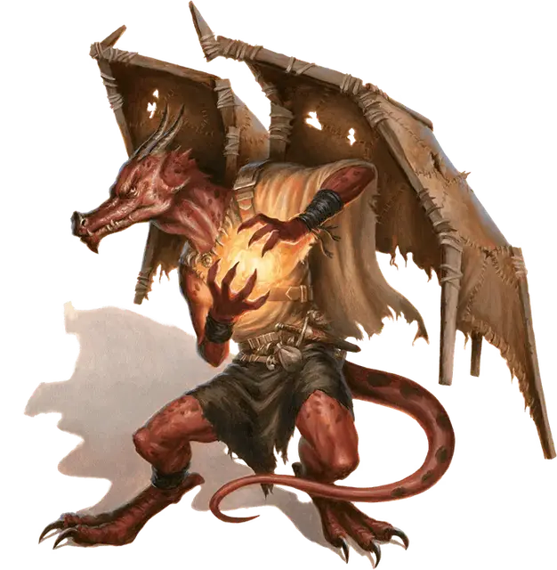

Кобольд чешуйчатый чародей
Kobold Scale Sorcerer
Маленький Гуманоид (Кобольд), законно-злой

Класс Доспеха 15 (природный доспех)
Хиты 27 (5к6 + 10)
Скорость 30 футов
| мод | спас | ||
|---|---|---|---|
| СИЛ | 7 | −2 | −2 |
| ЛОВ | 15 | +2 | +2 |
| ТЕЛ | 14 | +2 | +2 |
| мод | спас | ||
|---|---|---|---|
| ИНТ | 10 | +0 | +0 |
| МДР | 9 | −1 | −1 |
| ХАР | 14 | +2 | +2 |
Навыки Магия +2, Медицина +1
Чувства тёмное зрение 60 футов, пассивное Восприятие 9
Языки Общий, Драконий
Опасность 1 (200 опыта)
Бонус мастерства +2
Среда обитания Горы, Город, Лес, Подземье, Холмы
Особенности
Использование заклинаний. Кобольд является заклинателем 3-го уровня. Его способности основаны на Харизме (Сл спасброска от заклинаний 12, +4 к попаданию заклинаниями). У него подготовлены следующие заклинания чародея:
• Заговоры (неограниченно): огненный снаряд [fire bolt], волшебная рука [mage hand], починка [mending], ядовитые брызги [poison spray];
• 1 уровень (4 ячейки): очарование личности [charm person], цветной шарик [chromatic orb], поспешное отступление [expeditious retreat];
• 2 уровень (2 ячейки): палящий луч [scorching ray].
Единицы чародейства. У кобольда есть 3 единицы чародейства. Он восстанавливает все потраченные единицы чародейства после продолжительного отдыха. Он может потратить свои единицы чародейства на следующие варианты:
• Непреодолимое заклинание: Накладывая заклинание, вынуждающее существо совершить спасбросок для защиты от его эффектов, кобольд может потратить 3 единицы чародейства, чтобы одна из целей заклинания совершила первый спасбросок от этого заклинания с помехой.
• Неуловимое заклинание: Во время использования заклинания кобольд может потратить 1 единицу чародейства, чтобы сотворить его без вербальных и соматических компонентов.
Тактика стаи. Кобольд обладает преимуществом на броски атаки против существа, если хотя бы один его союзник находится на расстоянии 5 футов от существа и если при этом этот союзник не пребывает в состоянии недееспособности.
Чувствительность к солнечному свету. Находясь на солнечном свете кобольд получает помеху на броски на попадание и на проверки Мудрости (Восприятие), основанные на зрении.
Действия
Кинжал. . Рукопашная или Дальнобойная атака оружием: +4 к попаданию, досягаемость 5 футов или дистанция 20/60 футов, одна цель. Попадание: 4 (1к4+ 2) колющего урона.
Описание
Никогда не совершайте ошибку, полагая, что кобольды глупые и отсталые, потому что они маленького размера. Размер никак не влияет на их способности.
– Воло
Кобольд чешуйчатый чародей обладает врождённым магическим талантом, что делает его ценным членом племени по нескольким причинам. Поскольку божество кобольдов остается плененным,в большинстве племен нет членов, которые могли бы использовать божественную магию, и чешуйчатые чародеи берут на себя роль советников и историков. В мирное время они используют свои заклинания для защиты и усиления укреплений норы и помощи остальному племени. Когда племя находится под угрозой, чешуйчатый чародей бросается на врагов с огнём и ядом, сохраняя немного магии для себя на случай если ему понадобится сбежать или перехитрить захватчика.
Связанный Долгом с Драконом. В племени кобольдов, связанном с драконом, обычно таком, которое живет неподалеку от логова дракона или в нем, чешуйчатый чародей также служит дипломатом предвосхищает нужды дракона, раздает команды другим кобольдам от имени дракона и докладывает ему об исполнении. Чародей так же трепещет и уважает драконов как и обычные кобольды, но он знает, что его долг требует не подлизываться к хозяину все время. Он так же понимает, что его частая близость к дракону означает, что если его хозяин разозлится или будет недоволен, то он погибнет первым, так что он неистово поддерживает баланс между обожанием и ужасом в своем отношении к дракону.
См. дополнительно статью: "Бестиарий: Кобольды"